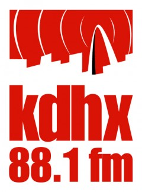

KDHX Community Media

Location:
Saint Louis, MO
The mission of KDHX is to build community through media, with diverse and independent voices that enrich the perspectives of our audiences. We promote civic and cultural participation by providing the tools, technology, and training vital to informed, creative expression. 88.1 FM, TV 21 and 22, and KDHX.org provide information for the community and serve as a platform for those seeking an audience. KDHX also offers free, low-cost, and subsidized educational opportunities that range from media literacy to production classes in audio, video and new media for youth and adults. KDHX provides the training, technology and tools necessary for people in St Louis to have access to media education and media production, making good on the promise of, “Your community, your media.”
Project Description:
Websites are no longer just the face of an organization, but rather websites have become like appendages, allowing organizations to reach out to constituents. A website becomes the “senses” of an organization, the means by which they see, hear, and touch their constituency. KDHX’s mission is to build community through media and one of the important ways we do this is through our website. KDHX.org allows our organization to interact with the community and to provide a platform for constituents to convey messages to the community. As technology changes and users are looking for more interactive experiences online, KDHX must update its website to continue to provide the exchange of information and ideas our community needs.
Participating in the CTC Vista Project enables KDHX to begin its Interactive Web Media Project, which centers around re-building the foundation of KDHX.org. The project will create a new online platform that leverages Joomla and integrates Salesforce.com. In response to several organizational needs, KDHX has transferred all constituency knowledge to Salesforce CRM (Contact Relationship Management software) and is working to review internal processes during the transformation. This has allowed us to see our organization in a new light, and it has made several other changes to our communications strategy both necessary and possible, including the creation of a new website which will enable a richer exchange of ideas and information between KDHX and its constituency.
The Interactive Web Media Project is timely because KDHX.org is currently running on a version of Joomla that is no longer being updated by developers. To avoid building on obsolescence, changes are necessary to our website so that we can continue to address the organizational goals of our strategic plan and our online communications strategy. This timing is also advantageous because it allows us to address design and content issues so that we can better present KDHX programs and services to the community, thus growing our base and building capacity. With the advent of Salesforce.com within the organization, we have the opportunity to integrate our CRM with our online presence, making it easier for users to find information and answers to questions, and easier for staff to help the community.
The Interactive Web Media Project allows us to re-design our website to enhance the user experience, not just for the sake of presenting information. We are able to use this opportunity to address other issues such as our visual layout, ways to better integrate social media, and to better incorporate video and audio clips throughout. This project needs a dedicated person to coordinate with all the different departments of KDHX so that we can build a structure to support a meaningful and useful online presence– one that is entertaining, user-friendly, and consistently maintains the integrity of KDHX Community Media while growing an audience.
By creating a new foundation for our website and utilizing Joomla and Salesforce, we are able to use metrics to better understand the habits, preferences, tastes and behaviors of our constituency so that we can better serve the community and add value to KDHX.org. This process also allows KDHX to streamline online processes and directly integrate user input for administrative processes– such as membership, volunteer services, and class enrollment. As a non-profit radio station, there are certain rules that regulate and restrict on-air sponsorship. These restrictions do not apply to the web. In order to provide the rich media experience we’re aiming for, we’re hoping to utilize the metrics collected to gain sponsorships and pre-roll messages that will help defray bandwidth costs and provide for better website sustainability.
The Interactive Web Media Project provides users with more interaction and a greater exchange of information and ideas between KDHX and its constituency. By giving the community what it’s searching for, and finding ways to involve them in dialogue and our online community once they navigate to our website, we will be able to address outreach capacity and increase the visibility of KDHX. In turn, this invites more people to participate in media and helps to create a more informed community about issues of local relevance, building a broader base for KDHX programs and services. The Interactive Web Media Project addresses the need for constantly-evolving online resources at KDHX. This project touches every department of KDHX Community Media, helping us to listen to constituents and communicate, to provide better services for the community and grow our base, and to truly reach people whom we have not previously been able to reach. By creating a stronger presence online, we are able to truly help build community through media, fulfilling the mission of KDHX Community Media.
Project Tangibles:
KDHX is involved in several projects where we seek to learn from other community media stations and provide our experiences as learning opportunities for other organizations. As part of this project, the Vista member would be asked to blog for KDHX.org about their experience, which would provide insight, viewpoints, and ongoing research for the field as the project takes shape. At the close of this project, the Vista member would be asked to work on a white paper for the industry to share the process and some of the learning that took place during this project in a way that would be useful to others in the field, including organizations KDHX belongs to such as the National Federation of Community Broadcasters, the Corporation for Public Broadcasting, and Leadership for Philanthropy.
Supported Projects
Website Developer
Robyn Haas
7/2009 — 7/2010
Participating in the CTC Vista Project enables KDHX to begin its Interactive Web Media Project, which centers around re-building the foundation of KDHX.org. The project will create a new online platform that leverages Joomla and integrates Salesforce.com. The Interactive Web Media Project also allows us to re-design our website to enhance the user experience, not just for the sake of presenting information. We are able to use this opportunity to address other issues such as our visual layout, ways to better integrate social media, and to better incorporate video and audio clips throughout. This project needs a dedicated person to coordinate with all the different departments of KDHX so that we can build a structure to support a meaningful and useful online presence– one that is entertaining, user-friendly, and consistently maintains the integrity of KDHX Community Media while growing an audience.
Goal 1: Evaluate KDHX.org and analyze the content and user-interface from the point of view of all stakeholders.
Goal 2: With IT Director, make recommendations for an interactive web media plan based on research, analysis, and direct feedback.
Goal 3: Create and implement a plan for KDHX.org’s new interactive media website.
Goal 4: Evaluate and analyze results of Vista member contribution and project implementation.
With the help of two staff members, two interns, and one volunteer Robyn was able to investigate needs, develop a structure, select software to satisfy needs, test, and receive approval to launch a new website for KDHX.org. Robyn’s work was completed methodically and with a great deal of care. The site is currently in a late beta testing stage, and is expected to replace KDHX.org within two months of the termination of Robyn’s service period.
The scope of our project was quite large and it was intended to allow for discovery at the beginning to determine what work would need to be completed. The discovery revealed a large amount of work to replace all of the existing website functionality with the new system. Robyn discovered an innovative way of using a software called JomSocial to build a social network within KDHX.org. This unique tool enables audience members to connect to and interact with radio and television show hosts in a way that was never before possible. Additionally, Robyn was able to investigate the use of a magazine management component for Joomla! called K2 that simplifies and expands upon our capabilities to present complex data and metadata. Her investigation and skillful testing of this component has completely changed our management of content and multimedia on KDHX.org
Related Content
None created yet!